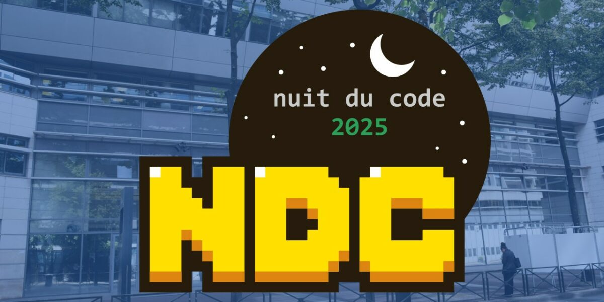
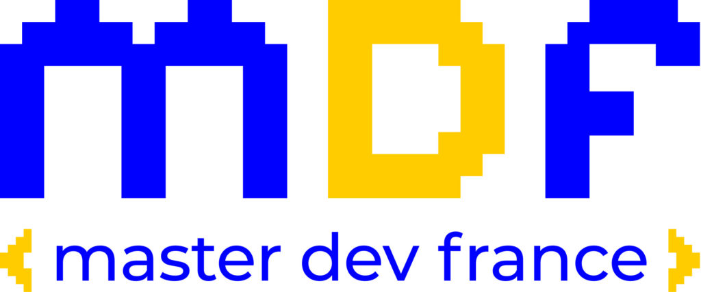

Computer Science Department
Computer Science, or the science of information processing, performs algorithmic treatment of data organized in structured sets. These treatment processes are programs, written with programming languages, and implemented on technical architectures (machines, network, computing resources). The programs and applications are designed in accordance with these structures as well as the expected results. Thus, depending on the particular problem, analysts will adapt the structures, the methods and the technical choices of language, and platforms, in order to realize a program, an application.
The computer science department offers students a wide range of modules that allow them to tackle complex problems. At the end of this cycle, students become designers and developers able to solve a diverse range of problems using appropriate algorithms and adapted. Students are introduced to group work and projects learning from a definition of problem specification, to the production of software. All projects ends with a defense during which instructors assume the role of the client. The undergraduate Computer Science modules consolidate the basic mastery of various domains of computing allowing students to choose a major specialization.
Competitive Programming



The Efrei Competition Team is linked to the Computer Science Department and participates in various coding contests throughout the year.